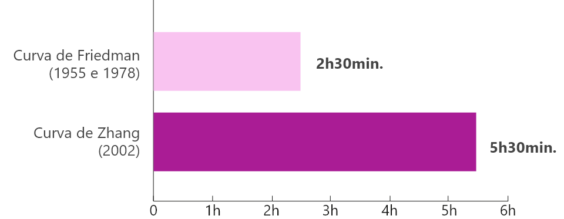
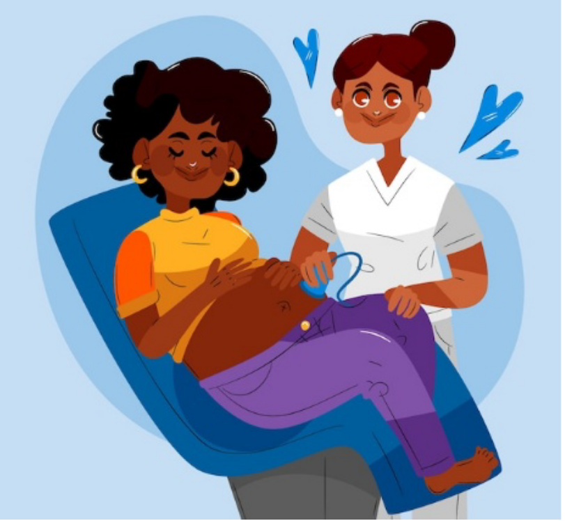
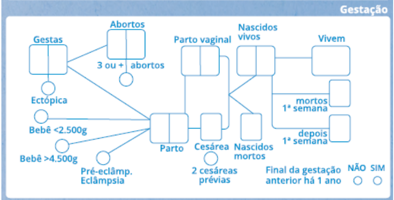

Aula 2
As práticas baseadas em evidências científicas e a realidade
brasileira (parte 2)
Introdução
O período de dilatação é o primeiro do trabalho de parto. Esse período se caracteriza pela progressiva dilatação e apagamento (encurtamento, esvaecimento) do colo uterino, que ocorrem devido à contratilidade do útero. Ao final do primeiro período, o colo uterino atinge 10 cm e apaga-se completamente, propiciando a passagem da apresentação fetal para a vagina e o início da expulsão do feto.
Esse período do parto também é influenciado pelo modo de vida contemporâneo, pois a maior prevalência de sobrepeso e obesidade entre as gestantes impactou a contratilidade uterina e, consequentemente, a curva de dilatação do colo uterino.
Assistência ao período de dilatação (primeiro período)
Você já refletiu sobre como a mudança do estilo de vida das pessoas ao longo dos anos pode impactar os cuidados da saúde? Com as gestantes não é diferente! Na primeira aula deste curso você teve acesso a dados históricos sobre a obstetrícia e sua evolução, agora vamos dar continuidade ao tema.
Atualmente, o trabalho de parto se tornou mais longo. Nos últimos 50 anos houve um aumento considerável do índice de massa corpórea (IMC), que pode ser devido a maus hábitos alimentares e sedentarismo. Isso tem gerado a prevalência de sobrepeso e de obesidade entre as gestantes. Com isso houve impacto na contratilidade uterina e, consequentemente, na curva de dilatação do colo uterino ao longo das últimas décadas.
Gestante sentada no sofá comendo chocolate
Podemos afirmar que o trabalho de parto se alongou, uma vez que a curva de dilatação se alterou, com uma transição mais gradual da fase latente para a fase ativa. Além disso, atualmente os fetos são maiores. Veja a seguir um gráfico com dados sobre esse assunto.
Gráfico comparativo da média de tempo para evolução da dilatação
 Fonte: Campus Virtual Fiocruz (2025)Os critérios atuais de normalidade consideram que a fase latente pode durar até 20 horas nas nulíparas (mulheres com primeiro parto) e 14 horas nas multíparas (mulheres que já tiveram dois ou mais filhos). Nulíparas e multíparas dilatam igual e lentamente até os 6 cm. Após, a progressão da dilatação é mais rápida, principalmente entre as multíparas.
Atualmente o limite considerado para a fase ativa é de 6 cm, e a recomendação para indicação de cesárea devido ao prolongamento da fase ativa deve incluir os seguintes critérios:
- Dilatação acima de 6 cm + amniorrexe ocorrida + parada secundária da dilatação após 4 horas de dinâmica uterina adequada.
-
Seis horas de infusão de ocitocina com dinâmica uterina inadequada.
Como você pode ver nos dados apresentados, as curvas de trabalho de parto se modificaram, mas podemos afirmar que não existe curva certa ou errada.
Gestante vestida com roupas estilo década de 1950
Gestante vestida com roupas do século XXI
Clique aqui e saiba mais sobre o padrão de dilatação em gestantes de populações isoladas.
Retardando a admissão para a Pré-natal de Qualidade
Devido às mudanças que você viu no tópico anterior, que prolongaram a fase de dilatação, se fez necessário reavaliarem-se os critérios para admissão de parturientes para a assistência ao trabalho de parto.
A efetividade do uso de programas específicos de avaliação do trabalho de parto com o objetivo de retardar a admissão para assistência, foi avaliada por um ensaio clínico randomizado (ECR) envolvendo 209 parturientes. Os critérios adotados na realização desse estudo incluíram:
- Colo dilatado entre 4 e 9 cm.
- Taxa de dilatação de 1 cm/hora e começo da descida fetal.
Veja o que a adoção desses critérios proporcionou:
Sendo assim, as evidências são favoráveis a evitar a internação de parturientes nas fases iniciais do período de dilatação, a fim de evitar intervenções desnecessárias (excesso de toques vaginais, amniotomias artificiais, uso de ocitocina) e reduzir as taxas de cesariana.
Acompanhantes e doulas
No Brasil, a presença de acompanhantes durante o trabalho de parto, parto e pós-parto foi regulamentada pela Lei Federal nº 11.108 de 7 de abril de 2005 (Portaria nº 2.148 de 2/12/2005). Desde então, está garantida à gestante a presença de uma pessoa de sua escolha para acompanhá-la em todo o período de internação (pré-parto, parto e pós-parto). Nesse caso, cabe à equipe médica, e em especial ao médico responsável, providenciar as condições necessárias para a adequada realização do parto.
Para assistir ao nascimento, está estabelecido que a pessoa acompanhante:
- Não interfira nos trabalhos, limitando-se a apenas a fazer companhia à gestante.
- Respeite todas as regras de comportamento e sossego do local, sem atrapalhar os procedimentos.
- Respeite as orientações médicas para permanecer no local.
Mulher com seu acompanhante no momento do pré-parto
Os benefícios do suporte contínuo ao trabalho de parto são numerosos e evidentes. A evidência científica dessas vantagens foi sustentada por uma metanálise Cochrane publicada em 2015 que incluiu 22 ECR e 15.288 parturientes. A partir desse método, foram observadas reduções:
- No tempo de trabalho de parto (média de 0,58 horas).
- No uso de analgesia intraparto.
- Na incidência de índice de Apgar < 7 no 5° minuto.
- De parto vaginal instrumentado, de cesáreas e das taxas de insatisfação com a assistência.
Além desses ganhos, foi observada a elevação da ocorrência de partos vaginais espontâneos. Portanto, cientificamente não restam dúvidas sobre o benefício da presença da pessoa acompanhante e do suporte contínuo para as mulheres durante o trabalho de parto, parto e pós-parto.
Seguindo a lógica dos benefícios do suporte contínuo na assistência ao parto, a inclusão da doula (“mulher que serve a outra”) nesse cenário também é indicativa de favorecimento ao sucesso do processo de parturição. Um estudo publicado em 2008, que avaliou os procedimentos realizados durante a assistência ao trabalho de parto e parto, evidenciou que as vantagens do suporte contínuo oferecido pelas doulas possui evidência científica. Entre eles, destacaram-se:
- Redução da necessidade de analgesia.
- Diminuição da taxa de partos vaginais operatórios.
-
Aumento da satisfação com a experiência do nascimento.
Ambiência
A ambiência, no que tange às inúmeras dificuldades nas instalações disponíveis no território nacional, se encontra regulamentada pela Resolução da Diretoria Colegiada (RDC) de número 36 da Agência Nacional de Vigilância Sanitária (Anvisa). A RDC 36 normatiza a ambiência por meio da instalação de salas PPP (pré-parto, parto e pós-parto).
A instalação de salas PPP tem como objetivo oferecer melhor privacidade à parturiente e aos seus acompanhantes, propiciando um parto conduzido de forma humanizada e segura.
Puérpera, acompanhante e seu recém-nascido em ambiência hospitalar
A ambiência deve transmitir comodidade e aconchego, com cores harmônicas, conforto luminoso, térmico e acústico. As salas devem possuir área mínima de 10,50 m² e dimensão mínima de 3,20 m. Devem disponibilizar poltrona para acompanhante, berço, área de 4,00 m² para cuidados de higienização do recém-nascido, instalações de água fria e quente, oxigênio e sinalização de enfermagem.
Jejum e risco de óbito por aspiração no trabalho de parto e parto
Durante o século XX muitas instituições passaram a recomendar suspensão da dieta após a internação de parturientes para Pré-natal de Qualidade. À medida que a cesariana apresentou aumento em suas taxas, essa prática foi sendo padronizada, justificada pelo maior risco de óbito por aspiração. Essa prática se manteve por várias décadas, a despeito da publicação de algumas revisões não suportando a conduta. Veja a evolução histórica desse tema na timeline a seguir.
Uma revisão, incluindo 44.016 casos, quantificou 66 aspirações pulmonares e dois óbitos.
Uma revisão, incluindo 4.097 óbitos maternos, identificou 129 mortes relacionadas a anestesia, sendo 23% delas por aspiração. Esses números traduzem uma taxa de 2,9/ milhões de nascimentos, com risco aproximado de 7 óbitos/10 milhões de nascimentos.
Analisando essas probabilidades, Sleutel & Golden (1999) comentaram que o risco anual de ser atingido por um raio nos EUA era de 1/600.000 e estimaram que o risco de morte por aspiração durante o trabalho de parto e parto é menor do que o de ser atingido por um raio duas vezes em um ano. Portanto, a morte ou a morbidade significativa por aspiração pulmonar durante o trabalho de parto e parto é tão rara que o uso de ECR para avaliar diretamente essa variável é impossível.
A partir do século XXI a conduta relacionada à dieta de parturientes passou a ser mais permissiva, com poucas variações entre os países. Sobre as evidências a favor do baixo risco de aspiração e óbito relacionado à anestesia de parturientes, o uso rotineiro de drogas profiláticas intencionando à redução da aspiração gástrica e de seus efeitos foi também investigada. Uma revisão envolvendo três ECR e um quasi-randomizado que totalizaram 2.465 parturientes concluiu pela inexistência de evidência científica que suporte a administração rotineira de antiácidos para prevenção de aspiração gástrica e suas consequências.
Clique aqui e saiba mais sobre alimentação das parturientes em outros países.
Práticas assistenciais no parto
Agora, vamos falar sobre algumas práticas assistenciais durante o parto. Você verá que, atualmente, algumas delas não são mais recomendadas devido a estudos realizados.
> Enema
A exemplo da suspensão da dieta, a prescrição rotineira de enema é uma prática que deve ficar no passado da Pré-natal de Qualidade. Apesar da escassez de grandes estudos, uma revisão sistemática publicada em 2013, envolvendo 1.917 parturientes provenientes de quatro ECR, não revelou nenhuma diferença com relação a infecção puerperal ou neonatal.
Um dos estudos que compôs essa revisão encontrou menor duração do trabalho de parto (409.4 minutos x 459.8 minutos) no grupo do enema. Um segundo ensaio encontrou maior duração do trabalho de parto (504.7 minutos x 392.7 minutos) no grupo do enema. Um terceiro ensaio não encontrou diferenças após ajustar para a paridade (515 minutos com enemas x 585 minutos sem enemas, p = 0.24). Um desses estudos avaliou a satisfação das mulheres e não encontrou diferenças entre os grupos.
> Tricotomia
Outra prática de rotina supostamente protetora que deve ficar no passado da Pré-natal de Qualidade é a tricotomia. Uma revisão sistemática publicada em 2014 e envolvendo 1.039 parturientes não revelou diferenças na morbidade febril pós-parto, na colonização bacteriana, nas infecções neonatais ou de ferida operatória materna e tampouco na satisfação das mulheres.
> Posição e movimentação materna no primeiro período do parto
Com relação a posição e movimentação maternas durante o período de dilatação, as evidências são favoráveis à liberdade de posição. Uma revisão da Cochrane publicada em 2013, envolvendo 5.218 parturientes provenientes de 25 ECR e quasi-randomizados, revelou que caminhar ou adotar posições verticais não oferece maior risco para a mulher ou para seu recém-nato, promove maior satisfação e reduz a duração do trabalho de parto, o risco de cesárea e a necessidade de anestesia epidural.
Gestante em posição confortável no primeiro período do parto
> Amniotomia
Essa prática é realizada com muita frequência, tanto como método de indução e condução do trabalho de parto quanto de rotina. Conheça detalhes do tipo de uso da amniotomia.
Como intervenção precoce associada à ocitocina, a amniotomia foi devidamente estudada. A Metanálise da Cochrane (2013) de 14 ECR e 8033 parturientes comparando a amniotomia e ocitocina precoces com o manejo expectante encontrou redução na duração do trabalho de parto, com diferença média (MD) de - 1,28 horas (IC 95% -1,97 a -0,59; 8 ECR; 4.816 mulheres).
Adicionalmente, a combinação dos métodos promoveu redução modesta na taxa de cesariana. Não foram encontrados efeitos significativos nos demais indicadores de morbidade materna ou neonatal. Portanto, como um método de indução do parto associado a ocitocina, a amniotomia pode ser um procedimento utilizado, sendo seletivamente indicado em discinesias (disfunção hipotônica) e suas repercussões clínicas (parada secundária da dilatação).
Vale destacar que amniotomia artificial não é isenta de riscos (prolapso de cordão umbilical, infecção, lesões maternas e fetais). Precedendo ou sucedendo à administração de ocitocina, a amniotomia exige avaliação da altura da apresentação para minimizar o risco de prolapso de cordão umbilical.
Como rotina, a amniotomia artificial não tem comprovado o seu benefício em reduzir o tempo até o parto. Uma revisão Cochrane (2013) de 15 ECR totalizando 5.500 parturientes concluiu que a amniotomia de rotina não reduziu os tempos dos primeiro e segundo períodos, e tampouco as taxas de cesárea. Foi comentado que a amniotomia avalia a presença de mecônio, porém que tal informação isolada tem valor prognóstico fraco e não afeta o manejo do trabalho de parto. Foi também ressaltado que a amniotomia rotineira pode elevar o risco de infecção e de prolapso de cordão.
> Monitorização do bem-estar fetal
A monitorização do bem-estar fetal é uma ação imprescindível na Pré-natal de Qualidade. A vigilância clínica realizada por meio da ausculta intermitente dos batimentos cardíacos fetais (BCF) é obrigatória em todo trabalho de parto.
A recomendação geral é realizar a ausculta intermitente (Sonnar Doppler, estetoscópio de Pinard) com avaliação e contagem dos BCF a cada 30 minutos durante o período de dilatação. A duração de cada avaliação (contagem) deve ser de, no mínimo, um minuto. Durante o período expulsivo (pélvico) a ausculta dos BCF deve ser realizada a cada cinco minutos, até o nascimento.
Monitorização do bem-estar fetal
A cardiotocografia (CTG) é o exame complementar mais utilizado para monitorização fetal eletrônica (MFE) e avaliação do bem-estar fetal durante os períodos de dilatação e expulsão. Apesar da relativa facilidade técnica para sua realização, trata-se de um exame de boa sensibilidade para detecção de quadros de hipóxia, porém de especificidade limitada. Isso significa que os traçados das CTG podem traduzir resultados falso-positivos. Portanto, deve-se ter cautela na interpretação das alterações, uma vez que elas podem ocorrer em fetos saudáveis e, consequentemente, desencadear a realização de intervenções desnecessárias, principalmente interrupção da gestação por meio de cesarianas.
Uma revisão sistemática Cochrane envolvendo 37.000 parturientes provenientes de 30 ECR e quasi-randomizados investigou a CTG contínua como uma forma de MFE. Foram comparados à CTG contínua e à ausculta intermitente. As conclusões apontaram que a CTG contínua pode:
- Elevar as taxas de cesárea e de parto vaginal operatório.
- Reduzir convulsões neonatais, porém sem diferenças nas taxas de paralisia cerebral, mortalidade neonatal ou outras morbidades.
Sendo assim, a recomendação que atualmente predomina é a de realizar ausculta intermitente, principalmente em gestações de baixo risco. Veja agora um quadro comparativo para condições de baixo risco e alto risco.
Gestante em condição de baixo risco
O Colégio Americano de Ginecologia e Obstetrícia (ACOG) recomenda ausculta intermitente a cada 30 minutos durante o período de dilatação e a cada 15 minutos durante o período expulsivo.

Gestante em condição de alto risco
Para pacientes de alto risco esses períodos de tempo devem ser reduzidos. É recomendado fazer a ausculta intermitente a cada 15 minutos durante o período de dilatação e a cada cinco minutos durante o período expulsivo. Para condições de alto risco (restrição de crescimento intrauterino - CIUR, pré-eclâmpsia, diabetes melittus tipo I), além da ausculta intermitente sugere-se MFE.
Em seu boletim de monitorização cardíaca fetal intraparto, o ACOG (2009) enumerou as seguintes recomendações e conclusões classificadas como evidência científica boa e consistente (A):
- MFE eleva a ocorrência de parto vaginal operatório e cesárea por acidose ou padrões anormais de BCF.
- Nas desacelerações variáveis recorrentes, a amnioinfusão deve ser considerada.
- Oximetria de pulso não parece ser clinicamente útil para avaliação do estado fetal.
-
A taxa de resultados falso-positivos da MFE para predição de paralisia cerebral é elevada. Essa conclusão ainda carece de evidência científica mais robusta e tem sido classificada como evidência científica B.
As principais desacelerações possíveis de serem registradas nos traçados de CTG são as precoces, as tardias e as variáveis, sendo distintas e de significado e condutas também diferentes. As desacelerações precoces e tardias guardam relação com as contrações, enquanto as variáveis independem da contratilidade uterina. Veja a seguir os detalhes de cada tipo de desaceleração.
O pico da desaceleração coincide com o pico da contração. A queda dos BCF ocorre devido ao reflexo vasovagal, que é desencadeado pela compressão do polo cefálico na pelve materna devido à contração uterina. À medida que o útero relaxa, a frequência cardíaca fetal (FCF) retorna para sua linha de base. O início da desaceleração é gradual, ocorrendo com ≥ 30”. Desacelerações precoces são muito frequentes no período expulsivo, principalmente em sua fase avançada. São desacelerações fisiológicas, que traduzem a descida da apresentação fetal na pelve materna durante a contração uterina e não necessitam de nenhuma intervenção.
O pico da desaceleração ocorre após o pico da contração. É indicativa de hipóxia fetal, pois o útero relaxa e o feto persiste em bradicardia. O início da queda da FCF também é gradual, ocorrendo com ≥ 30”. Desacelerações tardias repetitivas traduzem urgência obstétrica por risco de comprometimento fetal, sendo indicativas de intervenção imediata para extração do feto (cesárea ou parto vaginal operatório).
Esse tipo gera mais dúvidas e divergência de conduta entre as equipes assistenciais. São desacelerações ocasionadas pela compressão do cordão umbilical e independem da contratilidade uterina.
O formato das desacelerações variáveis é bem distinto do formato das desacelerações precoces e tardias. O início da queda da frequência cardíaca fetal é abrupto, ocorrendo em menos de 30”. O retorno em direção à linha de base é mais lento e a FCF retorna habitualmente em um nível inferior.
As desacelerações variáveis apresentam amplitude ≥ 15 batimentos por minuto e duração ≥ 15”. O motivo da desaceleração é a hipóxia determinada pela compressão funicular, razão pela qual eram denominadas no passado de desacelerações umbilicais. As desacelerações variáveis podem ocorrer a qualquer momento (antes, durante ou após as contrações). Sua associação com oligo-hidrâmnia é mais frequente. Sendo assim, é comum que desacelerações variáveis ocorram após amniotomias artificiais. Também podem ser oriundas de circulares de cordão ou associadas a situações mais graves, tais como laterocidência, procidência (bolsa íntegra) e prolapso do cordão umbilical (bolsa rota).
Desacelerações variáveis esparsas devem ser tratadas com medidas conservadoras, sendo a principal delas a mudança da postura materna. A posição materna de quatro apoios é uma escolha interessante, pois desloca o feto para a parede abdominal materna, eliminando a compressão exercida pelo peso fetal na coluna e nos vasos maternos, advinda da posição de litotomia. O decúbito lateral esquerdo também é recomendado, pois melhora o retorno venoso e o débito cardíaco materno, aumentando o fluxo úteroplacentário. A amnioinfusão também é recomendada, e por se tratar de um procedimento de baixa complexidade deveria ser mais utilizado pelas equipes assistenciais. Para sua realização é necessário posicionar a parturiente em litotomia, expor o colo uterino por meio de valvas e pinças, introduzir o equipo de soro fisiológico lateralmente à apresentação fetal e iniciar a infusão de cristaloide dentro da cavidade uterina.
É importante ressaltar que a variabilidade da FCF deve ser rotineiramente avaliada nos traçados de CTG, sendo um parâmetro muito fidedigno da boa oxigenação fetal. A variabilidade mais fisiológica da FCF é a moderada (ou ondulatória), com variação entre 6 e 25 bpm. A variabilidade mínima (ou comprimida) tem amplitude ≤ 5 e pode traduzir sono fetal, hipoglicemia materna ou hipóxia fetal, frequentemente ocasionando dúvidas e divergências de conduta. Diante de variabilidade mínima, antes de definir qualquer intervenção, são recomendados o estímulo do feto (sonoro ou tátil) e a investigação de hipoglicemia materna. Variabilidade ausente (não detectada a olho nu) e variabilidade acentuada (ou saltatória; > 25 bpm) classificam a CTG como anormal e podem traduzir hipóxia fetal.
Além da variabilidade da FCF é importante a avaliação de sua linha de base (normalmente entre 110 e 160 bpm) e o registro da movimentação fetal e das acelerações da FCF. Movimentos fetais seguidos de aceleração transitória da FCF (≥ 15 bpm por no mínimo 15 segundos) são indicativos de boa oxigenação fetal.
As CTG intraparto são classificadas com a intenção de contribuir para a definição de condutas. O ACOG classifica os traçados em três categorias (NICH/ACOG).
Alívio da dor
O momento do parto pode ser bastante doloroso. Por isso, podem ser utilizados alguns recursos para o alívio da dor da gestante. Vamos ver quais são?
> Métodos não farmacológicos
Acupuntura e acupressão
Entre as técnicas não farmacológicas de alívio da dor, a acupuntura e a acupressão são duas das que possuem evidência científica por meio de metanálise (Evidência A). Uma metanálise Cochrane de 13 ECR em 1.986 parturientes avaliou os possíveis benefícios da acupuntura e da acupressão. Comparados a nenhuma intervenção ou a placebo, a acupuntura elevou a satisfação e reduziu a dor intensa, necessidade de analgesia farmacológica e de parto vaginal instrumentado. Por sua vez, a acupressão reduziu a intensidade da dor.
Clique aqui e saiba mais sobre o uso da acupuntura para alívio da dor em parturientes.
Posturas e mobilidade materna
As posições maternas e a mobilidade durante o período de dilatação também parecem contribuir para o alívio da dor no trabalho de parto. Uma revisão da Cochrane (2013), que compilou dados de 25 ECR e quasi-randomizados (5.218 parturientes), concluiu que caminhar ou permanecer em posição vertical durante o período de dilatação reduz a necessidade de analgesia epidural.
Gestante e seu acompanhante se preparando para caminhar
O efeito da bola de nascimento (Bobath) no alívio da dor no trabalho de parto também foi avaliado por uma revisão sistemática e metanálise, incluindo três ECR e 205 parturientes. Foi encontrada a redução de um ponto na escala analógica visual de 10 pontos.
> Métodos farmacológicos de alívio da dor
Você já viu os métodos não farmacológicos de alívio para dor durante o parto. Agora, veja as formas farmacológicas de aliviar a dor da gestante no momento do parto.
Analgesia epidural
Com relação aos métodos farmacológicos de alívio da dor, parece não existirem dúvidas em relação à eficácia e superioridade da analgesia epidural. Entretanto, a técnica não é isenta de riscos e exige sabedoria para indicação e uso.
Em 2005, uma revisão sistemática da Cochrane, que compilou dados de 21 ECR (6.664 parturientes) comparando analgesia epidural com analgesia não epidural ou nenhuma analgesia durante o trabalho de parto, já havia revelado várias vantagens da analgesia epidural. Foram encontradas evidências de maior alívio da dor, redução da necessidade para alívio adicional e redução do risco de acidose e de administração de naloxona. Entretanto, foram observados diversos riscos, incluindo maiores taxas de parto vaginal operatório, hipotensão materna, bloqueio motor, febre materna, retenção urinária, prolongamento do período expulsivo, maior uso de ocitocina e maiores taxas de cesariana por estado fetal não tranquilizador. Não houve diferenças na taxa total de cesarianas, nos relatos lombalgia, no índice de Apgar < 7 no 5° e nem na satisfação materna com o alívio da dor.
Anestesia espinhal-epidural
A combinação de anestesia espinhal e epidural também é opção para o alívio da dor no trabalho de parto e parto. Uma revisão Cochrane (2012) compilando 27 ECR (3.274 parturientes) comparou anestesia espinhal-epidural combinada com analgesia epidural. Não foram encontradas diferenças na satisfação materna, habilidade motora, hipotensão, taxa de cesárea ou resultado neonatal. Entretanto, foram observados elevação nas taxas de retenção urinária, no uso das doses de resgate e nas taxas de parto vaginal instrumentado, favorecendo o uso analgesia epidural com baixas doses.
Analgesia inalatória
Outra opção atrativa de analgesia farmacológica no trabalho de parto e parto devido à facilidade para o uso, é a analgesia inalatória. A técnica pode ser realizada com óxido nitroso ou com derivados do fluorano e é autoadministrada.
Uma revisão Cochrane (2014), que compilou 26 ECR (2.959 parturientes), avaliou a analgesia inalatória para o manejo da dor no trabalho de parto e parto. O estudo concluiu que a analgesia inalatória com óxido nitroso e derivados do fluorano reduz a intensidade da dor, não eleva as taxas de cesariana ou de parto vaginal operatório e parece ser segura para o neonato. O uso de óxido nitroso foi associado a náuseas, vômitos, tonteiras e sonolência, com mais efeitos colaterais do que os derivados do fluorano. Esses foram mais associados a sonolência do que o óxido nitroso.
Toque vaginal
Como exame que integra a avaliação da evolução do trabalho de parto, o toque vaginal se associa a riscos estabelecidos de infecção. Portanto, sua prática deve ser racional e objetiva, também como um método diagnóstico de distocias. Métodos adicionais, tais como expressões faciais e oculares, características das contrações uterinas, percepção e respostas à dor, padrões respiratórios, secreções vaginais, tons de voz, formas de interação com o ambiente, capacidade de deambulação, fadiga e cansaço, sensação de pressão no períneo, textura da pele, sudorese, entre outros, também devem ser utilizados na avaliação da evolução do trabalho de parto e no diagnóstico das distocias.
Gestante em procedimento de toque vaginal
A recomendação do uso do toque limitado ao estritamente necessário diante de boa progressão do trabalho de parto são orientações já bem estabelecidas na Pré-natal de Qualidade.
Nesse sentido, se faz necessário estabelecer os intervalos mais seguros entre os toques, de acordo com a progressão do trabalho de parto, sempre considerando a potencialidade do toque para acrescentar informações importantes aos processos de decisões.
Em 2016, a Comissão Nacional de Incorporação de Tecnologias no Sistema Único de Saúde (Conitec) preconizou a realização de exame vaginal a cada 4 horas, diante de preocupação com o progresso ou, ainda, em resposta aos desejos da mulher. A OMS (2018) também recomenda exame digital com intervalos de 4 horas como uma rotina na avaliação durante o período de dilatação em parturientes de baixo risco.
Partograma
O partograma é um registro gráfico do trabalho de parto, sendo uma ferramenta útil para monitorizar a evolução do parto e possíveis distocias, suportando intervenções oportunas e necessárias. Esse instrumento se encontra mundialmente difundido e a OMS recomenda seu uso e propõe um novo modelo: o Guia de Cuidados do Trabalho de Parto.
Clique aqui e saiba mais sobre o uso do partograma.
Nas últimas décadas os estudos de Zhang reformularam os conceitos sobre o que é fisiológico em um trabalho de parto. Avaliando mais de 62.000 pacientes em trabalho de parto espontâneo e com bom resultado neonatal, as fases do trabalho de parto e suas durações foram redefinidas, distintamente do que foi descrito por Friedman.
Os achados de Zhang ainda foram confirmados por estudos maiores e compilados em metanálises, que concluíram que o fenômeno do parto é muito variável e que a velocidade da dilatação pode ser mais lenta do que se pensava anteriormente, variando inclusive de acordo com a dilatação e com o avançar do trabalho de parto. Portanto, ficou evidente que adotar a regra do 1 cm de dilatação a cada hora diagnostica equivocadamente as progressões como lentas. A partir da melhor compreensão do que é fisiológico, a representação gráfica do parto vem sendo modificada e reavaliada, na intenção de se desenvolver um novo modelo que melhor registre a evolução do trabalho de parto e que contribua para a assistência. Uma das primeiras mudanças propostas foi a retirada das linhas de alerta e de ação, por não refletirem a fisiologia da progressão do parto e por não se associarem a melhorias no resultado neonatal.
A despeito da carência de força das evidências científicas, o partograma persiste como uma ferramenta útil na facilitação da comunicação entre as equipes, assim como instrumento de suporte para a transferência de cuidado. Também propicia um importante registro para fins de prontuário e seu uso continua sendo fortemente recomendado. Complementarmente, vale destacar que, para fins jurídicos, a ausência de preenchimento do partograma é considerada uma falha.
Guia de cuidados do trabalho de parto da Organização Mundial de Saúde
O Guia de Cuidados do Trabalho de Parto proposto pela OMS em 2020 atualiza as definições contemporâneas e a duração dos períodos do parto com maior integralidade no cuidado, incluindo registros de presença de acompanhante, posição adotada pela parturiente, analgesia e ingestão de líquidos e alimentos. Como um novo instrumento de monitorização da evolução do parto ainda são necessários estudos avaliando seus resultados e sua aplicabilidade.
Esse Guia é um novo partograma que amplia as práticas avaliadas (acompanhante, posição materna, dieta, uso de métodos de alívio da dor) e modifica a avaliação da dilatação e dos tempos das distintas fases do trabalho de parto. Além disso, acrescenta uma sessão de avaliação do segundo estágio e também modifica a avaliação da descida da apresentação. Essas variáveis estão distribuídas em sete sessões: identificação, cuidado de suporte, bebê, mulher, progressão do trabalho de parto, medicamentos e tomada de decisão compartilhada.
São várias as diferenças entre o Guia de Cuidados e o partograma clássico. Veja:
Fim da aula
Nesta aula você revisou os principais aspectos relacionados ao primeiro período do parto (dilatação). A aula destacou aspectos importantes desse período, com ênfase na mudança ocorrida na curva de dilatação e nos novos critérios de normalidade. Também foram revisados os demais aspectos relacionados à assistência durante esse período, tais como presença de acompanhantes, ambiência, jejum, enema, tricotomia, posição e movimentação da parturiente, amniotomia, monitorização do bem-estar fetal, métodos de alívio da dor, uso racional do toque, partograma e o Guia de Cuidados do Trabalho de Parto atualmente proposto pela OMS.
Você concluiu esta aula, continue se empenhando nos seus estudos. Siga para a próxima aula!